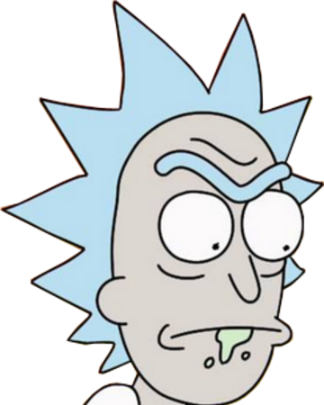
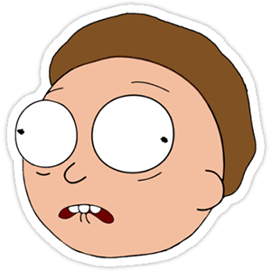
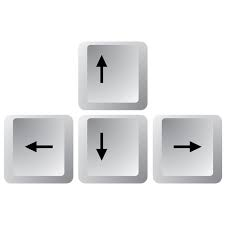
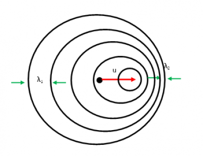

Poniższa strona jest rozwiązaniem projektu nr 1 z przedmiotu Techniki Internetowe 2021.
Wykorzystane technologie:
Jezyk HTML5:
Korzystając z elementów języka HTML wykonano szkielet strony wraz z odpowiednim formatowaniem treści. Wykorzystano elementy takie jak: header, nav, section, video, footer.
Przy użyciu elementu canvas wykonano przedstawienie graficzne symulacji.
CSS:
Wygląd naszej storny został zapisany za pomocą CSS
Jezyk JavaScript:
Do modyfikacji dokumentu HTML5 posłużono się elementami języka JavaScript i funkcjami takimi jak: getElementById oraz innerHTML.
Funkcje on... umożliwiły obsługę zdarzeń, a operacje na własnościach styli: style.display : none/block umożliwia odpowiednią nawigacjie po stronie
Wykorzystano także elementy biblioteki jquery do uzyskania efektu "przyklejenia" nawigacji.
Wykorzystano także technologię WebWorker aby zrobic timer naszej symulacji
Działanie symulacji
Czas działania probramu ustawiony jest do momentu gdy zródlo wysle ostatnia fale ktora miesci sie na canvasie reprezentującym wysyłane fale (~20s)
Interfejs symulacji składa się z:
elementu canvas, umożliwiającego wyświetlanie symulacji
suwaki które umożliwiają nam zmiane prędkości każdego obiektu w pionie i poziomie do maksymalnie prędkości dźwięku
boczne canvasy które obrazuja kiedy sygnał został wyslany a kiedy odebrany zawiera też informacje o ich częstotliwościach
Ruch podanego obiektu aktualizowana jest po zmianie dowolnego parametru na suwaku bądz po naciśnieciu odpowiednich klawisza
Program umożliwia ci sterowanie obrazkiem "rick" za pomoca klawiszy:

oraz "mortym" za pomoca klawiszy:


klikajac na "ricka" badz "mortiego" zerujesz ich predkosci
Program umożliwia ci także manipulowanie częstotliwością źródła [1Hz-3Hz]
Natomiaste podane przyciski pomagają ci w kontrolowaniu aplikacji
(Wskazówka: pamietaj aby wyłączyc pauze gdy chcesz zresetować rozgrywke)
Za prędkość fali w naszej symulacji przyjeliśmy prędkość dźwieku w powietrzu, w temperaturze 15 °C.
Symulacja posiada także timer który mierzy czas działania programu wykonany za pomoca WebWorker.
Temat i teoria
Zjawisko Dopplera polega na zmianie długości (a więc i częstotliwości) fali, będącego wynikiem ruchu względnego nadajnika i odbiornika tej fali.
Na poniższym wideo przedstawiono falę wytworzoną przez źródło w przestrzeni dwuwymiarowej.
Widać, że fala ma kształt kolisty i rozchodzi się równomiernie we wszystkich kierunkach, więc odległości pomiędzy powierzeniami falowymi wszędzie mają tą samą wartość równą długości fali (λ).
W przypadku nadajnika fali poruszającego się z prędkością (u) względem odbiornika w prawą stronę rysunek wygląda nieco inaczej:

W tym przypadku symetria nie jest zachowana. Odległości pomiędzy powierzchniami falowymi z prawej strony rysunku są mniejsze niż z lewej strony. Oznacza to, że jeżeli nadajnik fali zbliża się do odbiornika, ten rejestruje falę krótszą (o większej częstotliwości), aniżeli w przypadku, gdy wypadkowa prędkość nadajnika i odbiornika była równa zero. Natomiast jeżeli nadajnik oddala się od odbiornika, ten rejestruje falę dłuższą, a więc falę o mniejszej częstotliwości.
Równanie na zmienioną w wyniku efektu Dopplera częstotliwość fali można zapisać następująco:
$$f' = f(\frac{v\pm v_O}{v\mp v_Z})$$
gdzie:
f’ – częstotliwość fali zmieniona w wyniku efektu Dopplera,
f – częstotliwość pierwotna (wydawana przez nie poruszające się źródło fali),
v – prędkość rozchodzenia się fali w danym ośrodku,
u – względna prędkość nadajnika i odbiornika.
Równanie ze znakiem (+) należy stosować w przypadku, gdy nadajnik i odbiornik oddalają się od siebie, natomiast znak (–), gdy się przybliżają.
Zjawisko Dopplera wykorzystywane jest m.in. w radarach do pomiaru prędkości pojazdów, w medycynie do pomiaru prędkości przepływu krwi w organizmie, astronomii do pomiaru prędkości ruchu ciał niebieskich.